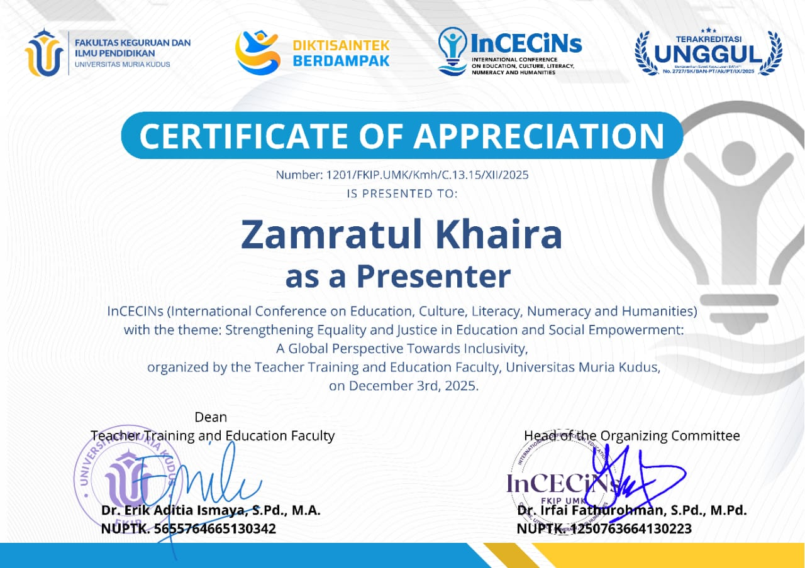

Portfolio & Achievements
Capaian akademik, publikasi ilmiah, dan prestasi profesional
🥇 Penulis Pertama Jurnal Ilmiah
JIPIS – DOI IndexedPenulis pertama artikel ilmiah pada Jurnal Ilmu Perpustakaan dan Informasi Sosial (JIPIS) yang telah memiliki DOI.
🔗 Lihat Jurnal

🎤 Presenter Seminar Internasional
InCECINs ConferenceMenjadi presenter dalam konferensi internasional InCECINs dengan mempresentasikan hasil penelitian ilmiah.
📄 Abstrak Penelitian Diterima
International SeminarAbstrak penelitian diterima dan berlanjut ke tahap full paper jurnal ilmiah internasional.
🔗 Link Akses / LOA